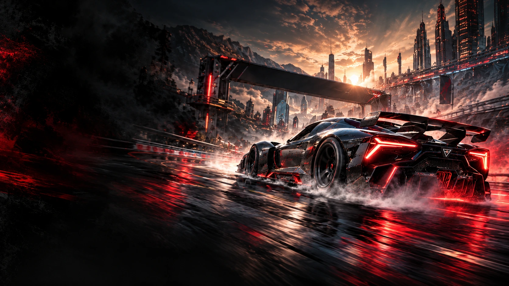

STORIES FROM
THE FAST LANE.
Racing, Teams und die Kultur hinter der nächsten Runde.
4 Artikel

Die nächste Runde beginnt.
Apex Championship: ein neues Format. Eine gemeinsame Startlinie. Und alles, was danach zählt.
Artikel lesen
Inside Nexus: mehr als schnelle Runden.
Drei Fahrer. Ein Rhythmus. Wie aus einzelnen Talenten ein eingespieltes Team wird.
Artikel lesen
Night Shift. Eine Garage voller Ideen.
Carbon, Werkstattlicht und der Blick fürs Detail: die Bildwelt hinter Overdrive.
Artikel lesen
Grip, Präzision und die perfekte Linie.
Unser Drift-Special über kontrollierte Bewegung und die Faszination nächtlicher Strecken.
Artikel lesenKeine passende Story gefunden. Probiere einen anderen Suchbegriff.